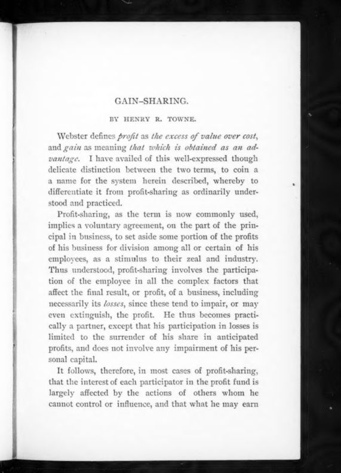

Halsey: o prêmio por hora poupada
Leitura: 6 min
Halsey critica a diária, a tarefa por peça e a participação nos lucros e propõe pagar, além do salário, um prêmio menor que o salário horário por hora poupada, sem nunca cortar a taxa.


Um empregador insatisfeito com a diária decide adotar a tarefa por peça. Calcula que uma peça que custa um dólar em salários poderia sair por uns 80 centavos com algum esforço extra e, para dividir a economia, oferece 90. O operário reclama que não vai “fazer o salário”, é convencido ou obrigado a tentar e surpreende todos: a produção sobe muito além dos 25% esperados. O custo continua em 90 centavos, o operário fica com quase toda a economia, e o empregador corta o preço da peça. Para F. A. Halsey, é aí que aparece o defeito fatal do sistema.
O texto, apresentado à American Society of Mechanical Engineers em 1891, segundo Taylor, é o segundo dos três trabalhos do nº 2 dos Economic Studies, de junho de 1896. Halsey o organiza como comparação: a diária, a tarefa por peça, a participação nos lucros e o seu plano de prêmio.
Por que a diária e a tarefa por peça falham?
Na diária, explica, qualquer aumento de esforço beneficia só o empregador; o operário não tem motivo para se esforçar, o ritmo se acomoda e o empregador paga caro pelo produto. Na tarefa por peça, fixado o preço, o aumento de esforço beneficia só o operário. Para recuperar a sua parte, o empregador corta o preço, e o corte equivale a anunciar que os ganhos não poderão passar de certo limite.
“Cortar o preço da peça é simplesmente matar a galinha dos ovos de ouro.” (Cutting the piece price is simply killing the goose that lays the golden egg.)
Mas, sem o corte, o empregador continua a pagar caro. Os dois sistemas são antíteses, conclui Halsey, e terminam no mesmo ponto: um ritmo acomodado, com os operários chegando tão perto do limite de ganho quanto julgam prudente e o empregador à espera de uma chance para cortar. Os interesses ficam antagônicos, e não há esforço conjunto para reduzir custos. A tarefa por peça tem ainda outro limite: exige registro do custo de cada peça, às vezes de cada operação, e só serve para produtos feitos em grande quantidade.
E a participação nos lucros?
Halsey lista cinco objeções. Os operários recebem o que não ganharam, porque o lucro pode vir de melhor gestão ou de vendas, e o que vem dessas fontes é presente, com ar de paternalismo. O esforço individual se dilui entre os colegas. A recompensa, anual ou semestral, é remota. O plano não prevê anos ruins: fala-se muito de partilha de lucros, nada de partilha de perdas. E os operários não têm como saber se o acordo foi cumprido, porque não podem examinar os livros nem, se pudessem, entender as contas. Que o sistema funcione por algum tempo, diz, nada prova; também a barragem de Conemaugh segurou água por muitos anos.
Como funciona o plano de prêmio?
O tempo de uma tarefa é fixado pela experiência anterior, e o operário, além da diária, recebe um prêmio por hora que poupar em relação a esse tempo. O prêmio por hora é sempre menor que o salário por hora, e esse é, nas palavras de Halsey, o alicerce de todos os méritos do sistema: cada hora poupada reduz o custo da tarefa e aumenta o ganho horário do operário. Ele é, na prática, pago para poupar tempo.
Qual deve ser o prêmio? Só o bom senso decide, responde Halsey. Onde produzir mais exige mais esforço muscular, o prêmio precisa ser generoso; onde exige atenção a velocidades e avanços e menos tempo perdido, um prêmio moderado basta. Um prêmio irrisório não convence; um alto demais faz o empregador pagar mais que o necessário, embora menos que antes. Bem escolhido, o prêmio deve ser permanente e só revisto se novos processos tirarem o sentido do tempo-base. Cortá-lo seria repetir o erro da tarefa por peça.
Halsey acrescenta que o ganho do empregador vem também do aumento da capacidade da fábrica, que libera máquinas para outros trabalhos. A transição a partir da diária é fácil, a contabilidade muda pouco e não há o que combater, porque nada é obrigatório. Para produtos em série, ele usa um cartão de tempo preenchido pelo mestre, com a promessa do prêmio impressa no verso; para trabalhos em grupo, o prêmio é dividido entre os que trabalharam na máquina, na proporção do tempo; para empreitadas novas, a base é o tempo estimado. Só o trabalho avulso por hora fica de fora.
Na minha leitura
Na minha leitura, o plano de Halsey resolve o problema do corte de preço com uma regra de divisão automática: como o prêmio é uma fração do salário horário, o empregador fica com parte de cada hora poupada e não precisa de cortes para participar do ganho. É um desenho de contrato que alinha incentivos sem exigir confiança nas contas da empresa, a objeção que ele faz à participação nos lucros.
O ponto frágil é o tempo-base. Ele vem da experiência anterior, e Halsey não discute o que acontece se esse tempo tiver sido inflado pelo próprio ritmo acomodado que o plano pretende corrigir. Foi exatamente essa a crítica de Taylor, no texto seguinte da edição.
Glossário
- Plano de prêmio
- pagamento da diária mais um valor por hora poupada em relação a um tempo-base.
- Tempo-base
- tempo da tarefa fixado pela experiência anterior, contra o qual se mede a hora poupada.
- Cartão de tempo
- registro do início e do fim de uma tarefa, usado para calcular o prêmio e o custo.
- Trabalho avulso (jobbing)
- serviço sob encomenda pago por hora, sem tempo-base definido.
Fontes
- The Premium Plan of Paying for Labor — F. A. Halsey (pp. 75–88). Internet Archive (número completo, PDF)
- Edição completa, com os demais artigos: ES 2 do Arquivo.
Documento em domínio público (EUA, publicado antes de 1931), via JSTOR Early Journal Content e Internet Archive. Resumo e comentário do autor deste site, sem afiliação com a American Economic Association. Encontrou um erro? Escreva: a correção é publicada no próprio texto, com data.
← Towne: dividir o ganho sem dividir o lucro ↑ ES 2 · Towne, Halsey e Taylor: como pagar o trabalho pela eficiência Taylor, 1895: medir o tempo para pagar a peça →